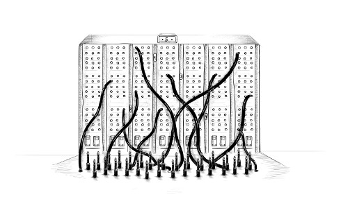

الفصل 13
JavaScript والمتصفح
الحلم الكامن وراء الويب هو فضاء معلوماتي مشترك نتواصل فيه عبر مشاركة المعلومات. وعالميته جوهرية: فكون رابط النص التشعبي قادراً على الإشارة إلى أي شيء، سواء كان شخصياً أو محلياً أو عالمياً، وسواء كان مسودة أو مصقولاً بعناية فائقة.
— تيم برنرز-لي، الشبكة العنكبوتية العالمية: تاريخ شخصي قصير جداً

ستناقش الفصول التالية من هذا الكتاب متصفحات الويب. فلولا المتصفحات لما وُجد JavaScript — أو لو وُجد، لما أولاه أحد أي اهتمام.
كانت تقنية الويب لامركزية منذ البداية، ليس تقنياً فحسب، بل أيضاً من حيث طريقة تطوّرها. فقد أضاف بائعو المتصفحات المختلفون وظائف جديدة بطرق ارتجالية وأحياناً غير مدروسة جيداً، ثم تبنّاها آخرون — أحياناً — وأخيراً دُوّنت في معايير.
هذا نعمة ونقمة في آن واحد. فمن جهة، من المُحرِّر ألا تتحكم جهة مركزية في نظام ما، بل أن تُحسّنه جهات متعددة تعمل في تعاون غير محكم (أو في عداء علني أحياناً). ومن جهة أخرى، الطريقة العشوائية التي طُوِّر بها الويب تعني أن النظام الناتج ليس مثالاً ساطعاً على الاتساق الداخلي. فبعض أجزائه مربكة تماماً وسيئة التصميم.
الشبكات والإنترنت
وُجدت شبكات الحاسوب منذ خمسينيات القرن العشرين. وإذا مددت كابلات بين حاسوبين أو أكثر وسمحت لها بإرسال البيانات ذهاباً وإياباً عبرها، أمكنك فعل كل أنواع الأشياء الرائعة.
وإذا كان ربط جهازين في المبنى نفسه يتيح لنا فعل أشياء رائعة، فإن ربط أجهزة في جميع أنحاء الكوكب ينبغي أن يكون أفضل. وقد طُوّرت التقنية اللازمة لبدء تحقيق هذه الرؤية في ثمانينيات القرن العشرين، والشبكة الناتجة تُسمى الإنترنت. وقد أوفت بوعدها.
يمكن لحاسوب أن يستخدم هذه الشبكة لقذف البتات إلى حاسوب آخر. ولكي ينشأ أي تواصل فعّال من هذا القذف للبتات، يجب أن يعرف الحاسوبان في الطرفين ما يُفترض أن تمثله هذه البتات. ويعتمد معنى أي تسلسل معطى من البتات كلياً على نوع الشيء الذي يحاول التعبير عنه وعلى آلية الترميز المستخدمة.
يصف بروتوكول الشبكة (network protocol) أسلوب التواصل عبر الشبكة. توجد بروتوكولات لإرسال البريد الإلكتروني، وجلب البريد الإلكتروني، ومشاركة الملفات، وحتى للتحكم في حواسيب صادف أنها مصابة ببرمجيات خبيثة.
بروتوكول نقل النص التشعبي (HyperText Transfer Protocol) واختصاره HTTP، بروتوكول لاسترجاع موارد مسماة (قطع من المعلومات، مثل صفحات الويب أو الصور). وهو يحدد أن على الطرف الذي يقدّم الطلب أن يبدأ بسطر كالآتي، يسمّي فيه المورد وإصدار البروتوكول الذي يحاول استخدامه:
GET /index.html HTTP/1.1
ثم توجد قواعد أخرى كثيرة تتعلق بالطريقة التي يمكن أن يضم بها مقدم الطلب مزيداً من المعلومات في الطلب، والطريقة التي يحزم بها الطرف الآخر، الذي يعيد المورد، محتواه. سننظر في HTTP بمزيد من التفصيل قليلاً في الفصل 18.
تُبنى معظم البروتوكولات فوق بروتوكولات أخرى. فيتعامل HTTP مع الشبكة كجهاز شبيه بالتيار يمكنك وضع البتات فيه لتصل إلى الوجهة الصحيحة بالترتيب الصحيح. وتوفير هذه الضمانات فوق إرسال البيانات البدائي الذي تمنحك إياه الشبكة مشكلة صعبة نوعاً ما بالفعل.
بروتوكول التحكم في الإرسال (Transmission Control Protocol) واختصاره TCP، بروتوكول يعالج هذه المشكلة. وجميع الأجهزة المتصلة بالإنترنت «تتحدث» به، ومعظم التواصل على الإنترنت مبني فوقه.
يعمل اتصال TCP على النحو الآتي: يجب أن يكون أحد الحاسوبين منتظراً، أو مستمعاً، حتى تبدأ حواسيب أخرى بالتحدث إليه. ولكي يتسنى الاستماع إلى أنواع مختلفة من التواصل في الوقت نفسه على جهاز واحد، يكون لكل مستمع رقم (يُسمى منفذاً) مرتبط به. وتحدد معظم البروتوكولات المنفذ الذي ينبغي استخدامه افتراضياً. على سبيل المثال، عندما نريد إرسال بريد إلكتروني باستخدام بروتوكول SMTP، يُتوقع أن يكون الجهاز الذي نرسل عبره مستمعاً على المنفذ 25.
يمكن لحاسوب آخر بعد ذلك إنشاء اتصال عبر الاتصال بالجهاز الهدف باستخدام رقم المنفذ الصحيح. وإذا أمكن الوصول إلى الجهاز الهدف وكان يستمع على ذلك المنفذ، يُنشأ الاتصال بنجاح. ويُسمى الحاسوب المستمع الخادم، ويُسمى الحاسوب المتصل العميل.
ويعمل هذا الاتصال كأنبوب ثنائي الاتجاه يمكن للبتات أن تتدفق عبره — فيمكن للجهازين في الطرفين وضع البيانات فيه. وبمجرد إرسال البتات بنجاح، يمكن للجهاز في الطرف الآخر قراءتها من جديد. هذا نموذج مريح. ويمكنك القول إن TCP يوفر تجريداً للشبكة.
الويب
الشبكة العنكبوتية العالمية (World Wide Web) — ولا تُخلط مع الإنترنت ككل — مجموعة من البروتوكولات والصيغ التي تتيح لنا زيارة صفحات الويب في متصفح. وتشير كلمة Web إلى أن مثل هذه الصفحات يمكنها الارتباط ببعضها بسهولة، فتتشابك في شبكة ضخمة يمكن للمستخدمين التنقل عبرها.
لكي تصبح جزءاً من الويب، كل ما عليك فعله هو ربط جهاز بالإنترنت وجعله يستمع على المنفذ 80 ببروتوكول HTTP حتى تتمكن حواسيب أخرى من طلب المستندات منه.
ويُسمى كل مستند على الويب بـمحدد الموقع الموحد (uniform resource locator) أو URL، وهو يبدو على نحو كهذا:
http://eloquentjavascript.net/13_browser.html
| | | |
protocol server path
يخبرنا الجزء الأول بأن هذا URL يستخدم بروتوكول HTTP (على عكس، مثلاً، HTTP المشفّر الذي سيكون https://). ثم يأتي الجزء الذي يحدد الخادم الذي نطلب المستند منه. وأخيراً سلسلة مسار تحدد المستند (أو المورد) الذي يهمنا.
تحصل الأجهزة المتصلة بالإنترنت على عنوان IP، وهو رقم يمكن استخدامه لإرسال الرسائل إلى ذلك الجهاز، ويبدو على نحو مثل 149.210.142.219 أو 2001:4860:4860::8888. ولأن قوائم الأرقام العشوائية إلى حد ما يصعب تذكرها ومرهقة في الكتابة، يمكنك بدلاً من ذلك تسجيل اسم نطاق (domain name) لعنوان أو مجموعة عناوين. وقد سجّلت eloquentjavascript.net ليشير إلى عنوان IP لجهاز أتحكم فيه، وبذلك يمكنني استخدام اسم النطاق هذا لتقديم صفحات الويب.
وإذا كتبت هذا URL في شريط عناوين متصفحك، سيحاول المتصفح استرجاع المستند الموجود في ذلك URL وعرضه. أولاً، على متصفحك أن يعرف العنوان الذي يشير إليه eloquentjavascript.net. ثم، باستخدام بروتوكول HTTP، سينشئ اتصالاً بالخادم الموجود في ذلك العنوان ويطلب المورد /13_browser.html. وإذا سار كل شيء على ما يرام، يرسل الخادم مستنداً يعرضه متصفحك بعد ذلك على شاشتك.
HTML
HTML، وهي اختصار HyperText Markup Language، صيغة المستندات المستخدمة لصفحات الويب. ويحتوي مستند HTML على نص، إضافة إلى وسوم (tags) تمنح النص بنية، وتصف أشياء مثل الروابط والفقرات والعناوين.
وقد يبدو مستند HTML قصير على النحو الآتي:
<!doctype html>
<html>
<head>
<meta charset="utf-8">
<title>My home page</title>
</head>
<body>
<h1>My home page</h1>
<p>Hello, I am Marijn and this is my home page.</p>
<p>I also wrote a book! Read it
<a href="http://eloquentjavascript.net">here</a>.</p>
</body>
</html>
تقدّم الوسوم، الملفوفة بين قوسين زاويين (< و>، رمزا أصغر من وأكبر من)، معلومات عن بنية المستند. أما بقية النص فهو نص عادي فحسب.
يبدأ المستند بـ<!doctype html>، الذي يخبر المتصفح بتفسير الصفحة بوصفها HTML حديثاً، على عكس الأنماط المهجورة المستخدمة في الماضي.
لمستندات HTML رأس وجسم. يحتوي الرأس على معلومات عن المستند، ويحتوي الجسم على المستند نفسه. وفي هذه الحالة، يعلن الرأس أن عنوان هذا المستند هو «My home page» وأنه يستخدم ترميز UTF-8، وهو طريقة لترميز نص Unicode إلى بيانات ثنائية. ويحتوي جسم المستند على عنوان (<h1>، أي «عنوان 1» — وينتج <h2> إلى <h6> عناوين فرعية) وفقرتين (<p>).
وتأتي الوسوم في عدة أشكال. فيبدأ العنصر، مثل الجسم أو فقرة أو رابط، بـوسم فتح (opening tag) مثل <p> وينتهي بـوسم إغلاق (closing tag) مثل </p>. وتحتوي بعض وسوم الفتح، مثل وسم الرابط (<a>)، على معلومات إضافية في صورة أزواج name="value". وتُسمى هذه خصائص (attributes). وفي هذه الحالة، يُشار إلى وجهة الرابط بـhref="http://eloquentjavascript.net"، حيث href اختصار «hypertext reference».
وبعض أنواع الوسوم لا تحوي شيئاً وبالتالي لا حاجة إلى إغلاقها. ووسم البيانات الوصفية <meta charset="utf-8"> مثال على ذلك.
ولكي يتسنى تضمين قوسين زاويين في نص مستند رغم أن لهما معنى خاصاً في HTML، لا بد من إدخال شكل آخر من الترميز الخاص. فيُكتب قوس الزاوية الفاتح المجرد بالشكل < («أصغر من»)، ويُكتب قوس الإغلاق بالشكل > («أكبر من»). وفي HTML، يُسمى محرف العطف (&) متبوعاً باسم أو رمز محرف وفاصلة منقوطة (;) كياناً (entity)، ويُستبدل بالمحرف الذي يرمزه.
وهذا مشابه للطريقة التي تُستخدم بها الشرطات المائلة العكسية في نصوص JavaScript. ولأن هذه الآلية تمنح محارف العطف معنى خاصاً أيضاً، فلا بد من ترميزها بالشكل &. وداخل قيم الخصائص، الملفوفة بعلامات اقتباس مزدوجة، يمكن استخدام " لإدراج محرف اقتباس حرفي.
ويُحلَّل HTML بطريقة متسامحة مع الأخطاء بشكل ملحوظ. فعندما تغيب وسوم ينبغي أن تكون موجودة، يضيفها المتصفح تلقائياً. وقد وُحّدت الطريقة التي يجري بها ذلك، ويمكنك الاعتماد على جميع المتصفحات الحديثة لتفعل ذلك بالطريقة نفسها.
وسيُعامَل المستند الآتي معاملة المستند المعروض سابقاً تماماً:
<!doctype html>
<meta charset=utf-8>
<title>My home page</title>
<h1>My home page</h1>
<p>Hello, I am Marijn and this is my home page.
<p>I also wrote a book! Read it
<a href=http://eloquentjavascript.net>here</a>.
اختفت وسوم <html> و<head> و<body> تماماً. فالمتصفح يعرف أن <meta> و<title> ينتميان إلى الرأس وأن <h1> يعني أن الجسم قد بدأ. علاوة على ذلك، لم أعد أغلق الفقرات صراحة، لأن فتح فقرة جديدة أو إنهاء المستند سيغلقهما ضمنياً. كما اختفت علامات الاقتباس حول قيم الخصائص.
وسيتجاهل هذا الكتاب عادةً وسوم <html> و<head> و<body> في الأمثلة ليبقيها قصيرة وخالية من الفوضى. غير أنني سأغلق الوسوم وأضمّن علامات الاقتباس حول الخصائص.
كما سأتجاهل عادةً إعلان doctype وcharset. ولا تأخذ هذا تشجيعاً على إسقاطهما من مستندات HTML. فكثيراً ما تفعل المتصفحات أشياء سخيفة عندما تنساهما. واعتبر doctype وبيانات charset الوصفية موجودين ضمنياً في الأمثلة، حتى عندما لا يظهران فعلياً في النص.
HTML وJavaScript
في سياق هذا الكتاب، أهم وسم HTML هو <script>، الذي يتيح لنا تضمين قطعة من JavaScript في مستند.
<h1>Testing alert</h1>
<script>alert("hello!");</script>
وسيُشغَّل مثل هذا السكربت بمجرد أن يصادف المتصفح وسم <script> أثناء قراءته HTML. وستُظهر هذه الصفحة نافذة حوار عند فتحها — فدالة alert تشبه prompt من حيث أنها تُظهر نافذة صغيرة، لكنها تعرض رسالة فقط دون طلب إدخال.
وتضمين برامج كبيرة مباشرة في مستندات HTML غالباً غير عملي. ويمكن إعطاء وسم <script> خاصية src لجلب ملف سكربت (ملف نصي يحتوي على برنامج JavaScript) من URL.
<h1>Testing alert</h1>
<script src="code/hello.js"></script>
وملف code/hello.js المضمّن هنا يحتوي على البرنامج نفسه — alert("hello!"). وعندما تشير صفحة HTML إلى URLs أخرى كجزء منها، مثل ملف صورة أو سكربت، تسترجعها متصفحات الويب فوراً وتضمّنها في الصفحة.
ويجب دائماً إغلاق وسم script بـ</script>، حتى لو كان يشير إلى ملف سكربت ولا يحتوي على أي شيفرة. وإذا نسيت ذلك، فسيُفسَّر بقية الصفحة كجزء من السكربت.
ويمكنك تحميل وحدات ES (انظر الفصل 10) في المتصفح بإعطاء وسم script خاصية type="module". ويمكن لهذه الوحدات أن تعتمد على وحدات أخرى باستخدام URLs نسبية إليها كأسماء وحدات في تصريحات import.
ويمكن لبعض الخصائص أن تحتوي أيضاً على برنامج JavaScript. فوسم <button> (الذي يظهر كزر) يدعم خاصية onclick. وستُنفَّذ قيمة الخاصية كلما نُقر الزر.
<button onclick="alert('Boom!');">DO NOT PRESS</button>
ولاحظ أنني اضطررت إلى استخدام علامات اقتباس مفردة للنص داخل خاصية onclick لأن علامات الاقتباس المزدوجة مستخدمة بالفعل لتطويق الخاصية كلها. وكان بوسعي أيضاً استخدام " لترميز علامات الاقتباس الداخلية.
داخل صندوق الرمل
تشغيل برامج مُنزَّلة من الإنترنت ينطوي على خطر محتمل. فأنت لا تعرف الكثير عن الأشخاص الذين يقفون خلف معظم المواقع التي تزورها، وليس بالضرورة أن تكون نواياهم حسنة. وتشغيل برامج من فاعلين خبيثين هو الطريق إلى إصابة حاسوبك بالفيروسات، وسرقة بياناتك، واختراق حساباتك.
ومع ذلك، فإن جاذبية الويب تكمن في أنه يمكنك تصفحه دون الوثوق بالضرورة بكل الصفحات التي تزورها. ولهذا السبب تقيّد المتصفحات بشدة ما يمكن لبرنامج JavaScript فعله: فلا يمكنه الاطلاع على الملفات الموجودة على حاسوبك أو تعديل أي شيء لا علاقة له بصفحة الويب التي ضُمِّن فيها.
ويُسمى عزل بيئة البرمجة بهذه الطريقة العزل في صندوق الرمل (sandboxing)، والفكرة أن البرنامج يلعب في صندوق رمل بلا ضرر. لكن ينبغي أن تتخيل هذا النوع تحديداً من الصناديق وعليه قفص من قضبان فولاذية سميكة حتى لا تستطيع البرامج اللاعبة فيه الخروج فعلاً.
والجزء الصعب في العزل هو منح البرامج مساحة كافية لتكون مفيدة مع تقييدها من فعل أي شيء خطير. فالعديد من الوظائف المفيدة، مثل التواصل مع خوادم أخرى أو قراءة محتوى حافظة النسخ واللصق، يمكن استخدامها أيضاً لأغراض إشكالية تنتهك الخصوصية.
وبين الحين والآخر، يبتكر شخص طريقة جديدة للتحايل على قيود المتصفح وفعل شيء ضار، بدءاً من تسريب معلومات خاصة بسيطة وصولاً إلى السيطرة على الجهاز كله الذي يعمل عليه المتصفح. فيستجيب مطوّرو المتصفحات بإصلاح الثغرة، ويعود كل شيء إلى ما كان عليه — حتى تُكتشف المشكلة التالية، ونأمل أن تُعلَن علناً بدلاً من أن تستغلها سراً وكالة حكومية أو منظمة إجرامية.
التوافق وحروب المتصفحات
في المراحل المبكرة من الويب، هيمن متصفح يُدعى Mosaic على السوق. وبعد بضع سنوات، انتقل التوازن إلى Netscape، الذي حلّ محلّه بدوره Internet Explorer من Microsoft إلى حد كبير. وفي أي لحظة كان فيها متصفح واحد مهيمناً، كان بائع ذلك المتصفح يشعر بأن من حقه اختراع ميزات جديدة للويب من جانب واحد. ولأن معظم المستخدمين استخدموا المتصفح الأكثر شيوعاً، كانت المواقع تبدأ ببساطة في استخدام تلك الميزات — بغض النظر عن المتصفحات الأخرى.
كان هذا العصر المظلم للتوافق، الذي يُسمى غالباً حروب المتصفحات. ووجد مطوّرو الويب أنفسهم لا أمام ويب موحد واحد، بل أمام منصتين أو ثلاث منصات غير متوافقة. ولزيادة الأمر سوءاً، كانت المتصفحات المستخدمة حوالي عام 2003 مليئة كلها بالعلل، وكانت العلل بالطبع مختلفة في كل متصفح. كانت الحياة قاسية على من يكتبون صفحات الويب.
وقد تحدى Mozilla Firefox، وهو فرع غير ربحي من Netscape، موقع Internet Explorer في أواخر العقد الأول من القرن الحادي والعشرين. ولأن Microsoft لم تكن مهتمة كثيراً بالبقاء تنافسية في ذلك الوقت، انتزع Firefox منها حصة كبيرة من السوق. وفي الوقت نفسه تقريباً، قدّمت Google متصفحها Chrome واكتسب متصفح Safari من Apple شعبية، ما أدى إلى وضع كان فيه أربعة لاعبين كبار بدلاً من واحد.
وكان للاعبين الجدد موقف أكثر جدية تجاه المعايير وممارسات هندسية أفضل، فمنحونا توافقاً أكبر وعللاً أقل. أما Microsoft، إذ رأت حصتها السوقية تتفتت، فقد عادت وتبنّت هذه المواقف في متصفحها Edge الذي حلّ محل Internet Explorer. وإذا كنت تبدأ تعلّم تطوير الويب اليوم، فاعتبر نفسك محظوظاً. فأحدث إصدارات المتصفحات الكبرى تتصرف بشكل موحّد تماماً ولديها علل قليلة نسبياً.
وللأسف، مع تضاؤل حصة Firefox السوقية أكثر فأكثر، وتحوّل Edge إلى مجرد غلاف حول نواة Chrome في عام 2018، قد يتخذ هذا التوحّد شكل سيطرة بائع واحد مرة أخرى — Google هذه المرة — على سوق المتصفحات بما يكفي لفرض تصورها عما ينبغي أن يكون عليه الويب على بقية العالم.
ومهما كان الأمر، فقد أنتجت هذه السلسلة الطويلة من الأحداث التاريخية والمصادفات منصة الويب التي لدينا اليوم. وفي الفصول التالية، سنكتب برامج لها.